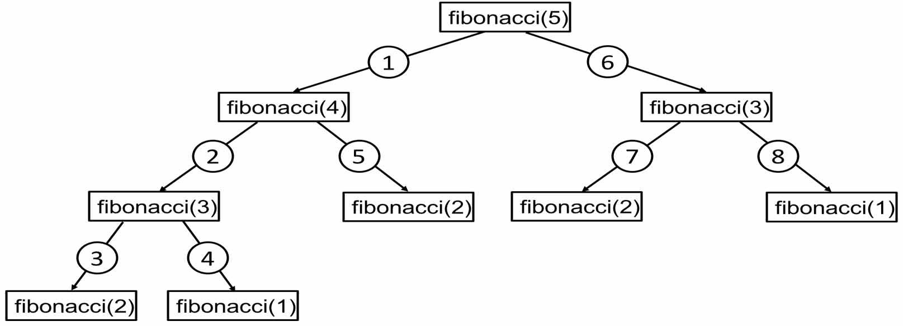

Updated ( 2021-04-26 )
MySite> Computer Science> Programming Techniques
- when workin with dynamic programming (but in data structures and algorithms in general) we should visualize the problem (ex: recursion tree, tabulation table) so we can see the big picture
- Procedural - Sequential series of execution steps (top to bottom)
- Object-Oriented - data and logic is stored in object properties and methods
- Functional - the code organized in functions, each function usually has a specific tasks
- a function that calls itself to solve a problem
- a recursive function has 2 parts :
- recursive case = the function will call itself again
- base case = the function stops calling itself (will be the top of the recursive call stack)
- factorials with recursion
var fact = function(n){
if (n >=1) {
return n * fact(n - 1); // recursive case // the function will call itself again
} else {
return 1; // base case // the function stops calling itself further
}
}
fact(3); // -> 6 // 3! = 6
fact(5); // -> 120 // 5! = 120
fact(8); // -> 40320 // 5! = 40320
- get the nth fibonacci number with recursion
var fib = function(n){
if (n <= 0) {
return 'positive integer required!' // base case
} else if (n == 1 || n == 2) {
return 1; // base case
} else {
return fib(n - 1) + fib(n - 2) // recursive case
}
}
fib(3); // -> 2
fib(6); // -> 8
fib(21); // -> 10946
function sum(arr){
if (arr.length == 1) {
return arr[0]
} else {
return arr.shift() + sum(arr)
}
}
console.log( sum([1, 2, 3, 4, 5]) ); // -> 15
var land1 = {length:1680, width:640,};
var land2 = {length:500, width:200};
var land3 = {length:2000, width:3000};
var land4 = {length:2000, width:'x'};
function getSquares(obj, count = 1){
if (obj.width < obj.length){
obj.length -= obj.width; // calculates the remainig land space
obj[`square_${count}`] = {length:obj.width, width:obj.width}; // the current square what is taken off from the land
return getSquares(obj, count + 1); // recursive call with the remaining land
} else if (obj.width > obj.length) {
obj.width -= obj.length;
obj[`square_${count}`] = {length:obj.length, width:obj.length};
return getSquares(obj, count + 1);
} else if (obj.width == obj.length) {
delete obj.length; delete obj.width;
return obj
} else {
throw new Error('invalid argument! Expected: {length:nr, width:nr}')
}
}
// land 1 can be divided into 6 squares
console.log( getSquares(land1) ); // -> {
// square_1:{length:640, width:640},
// square_2:{length:640, width:640},
// square_3:{length:400, width:400},
// square_4:{length:240, width:240},
// square_5:{length:160, width:160},
// square_6:{length:80, width:80}
// }
// land 2 can be divided into 3 squares
console.log( getSquares(land2) ); // -> {
// square_1: { length: 200, width: 200 },
// square_2: { length: 200, width: 200 },
// square_3: { length: 100, width: 100 }
// }
// land 3 can be divided into 2 squares
console.log( getSquares(land3) ); // -> {
// square_1: { length: 2000, width: 2000 },
// square_2: { length: 1000, width: 1000 }
// }
console.log( getSquares(land4) ); // -> Error thrown 'invalid argument! Expected: {length:nr, width:nr}'
- a Closure is basically an isolated environemt (scope), in Javascript function bodies provide scopes (closures)
- code (variables, expressions, etc...) in the function body are isolated from the upper scope
function makeUser(user){
let user_ = user;
function getUser(){ // closure
return user_;
}
return getUser; // returns the closure
}
var steven = makeUser('Steven'); // the parent function called and finished here
steven(); // -> 'Steven' // the closure remembers its parent scope even when the parent function is finished
- in JavaScript we can create a Module (code pattern) with closures
function makeClient(client){
let client_ = client;
let account = 0;
function deposit(sum){
account += sum;
}
function withdraw(sum){
account -= sum
}
function getBalance(){
return account + 'Ft';
}
return { // an object returned with all closures
client: client_,
deposit: deposit,
withdraw: withdraw,
getBalance: getBalance
}
}
var steven = makeClient('Steven'); // creating the client
steven.client; // -> 'Steven'
steven.getBalance(); // -> '0Ft'
steven.deposit(1500);
steven.deposit(5000);
steven.getBalance(); // -> '6500Ft'
steven.withdraw(3000);
steven.getBalance(); // -> '3500Ft'
- a Higher-Order function is a function which returns a function, the function which return the function sits in 'higher-order'
SYNTAX : function highOrd() { // function higher in the closure hierarchy has "Higher-Order"
return function() {};
}
highOrd(); // -> function() {} // returns the nested function
highOrd()(); // executes the nested function
function fnA(a) {
return function(b) { // enclosed function
return b + " " + a; // enclosed function's return value // -! the higher order function "encloses" its passed value in here
};
}
var fnB = fnA("Pie"); // we "enclose" the "Pie" value here (the fnB holds the enclosed value)
fnB("Apple"); // -> "Apple" Pie" // the enclosed value returned here (with another passed value)
// ---------------
fnA("Pie")("Apple"); // we can call the enclosed function right away like this
// Higher-Order Function calls an action ---------------------------------------------
function fireAction(action) { // this is the "Higher-Order" function which is called first
return action(); // the "Lower-Order" function is returned and executed here
}
function displayAlert() { // this function will be passed as the "action" argument of the function above (this is the "Lower-order" function)
alert("alert!");
}
fireAction(displayAlert); // function is passed as argument here
fireAction(() => {alert("alert!");}); // this does the same as the above call
<p id="closure"></p>
<script>
$(document).ready(function(){
function counterHost(){
var counter = 0; // define collection container
return () => counter = counter + 1;
}
let count = counterHost(); // define closure
count();
count();
count(); // no matter how many times the closure is called the parent function holds the value
// print
$("#closure").text("The result of the magical Closure is = " + count());
});
</script>
<p id="closureArg"></p>
<script>
$(document).ready(function(){
function hostFn(a, b, c) {
return (d, e, f) => a + " " + b + " " + c + " " + d + " " + e + " " + f; // both functions' arguments are passed and returned
}
var closFn = hostFn("1", "2", "3");
// print
$("#closureArg").text(closFn("4", "5", "6") );
});
</script>
<p id="addCars"></p>
<script>
let cars = [];
function repeatAction(nr, action) {
for(let i = 0; i < nr; i++) {
action(i); // this is where "addArr_items" function executed a number of times the loop calls it
} // the value is passed by the "repeatAction" function !
}
function addArr_items(i) { // this is a simple function which pushes a new item in the targeted array
cars.push("Car" + (i + 1));
}
repeatAction(4, addArr_items); // call the parent functions, the second value is the nested function
// 4 new items are added to the array
repeatAction(4, (i) => {cars.push("Car" + (i + 1));});
// we do the same thing here but on the spot with an arrow function
document.getElementById("addCars").innerHTML = cars;
</script>
<p id="doubleCall"></p>
<script>
var doubleCall = function(a, b) {
return (c, d) => a + b + c + d;
}
document.getElementById("doubleCall").innerHTML = doubleCall(4, 5)(3, 7);
</script>
- by using recursion breaking down a big problem into small pieces until this small piece can be solved with a base case, then rebuild the big solution from these small solutions
- ex: Merge Sort uses this aproach, we recursively split in half the array until the smallest arrays has only 2 elements, then we sort and rebuild recursively the sorted array

- The Greedy programming technique is a simple approach to a complex problem, it's usually used when NP-complete problems encountered (problems that requires a lot of calculations to give right answer)
- Greedy algorithms don't give us the best solution but a 'good enough' solution
- Ex: the travelling sales person problem requires O(n!) time to solve, we could implement a greedy algorithm which chooses the shortest path from the current vertex every time, this wont' give us the best solution but (depending the context) this will be a good enough solution
- Dynamic programming is used to solve optimization and combinatorial problems, in other words it's used to solve problems where otherwise we should use the brute force approach (NP-complete)
- dynamic programming is applicable if the problem can be broken into small problems, which then build up to solve the big problem and these small problems are overlapping problems (repeat themselves)
- There are 2 dynamic programming techniques, Memoization and Tabulation
Memoization (Top-Down):
- we use the recursive approach here but we implement a 'memo' object where we save the returned values
- if the recursion encounter an already performed recursion that value is returned from the memo instead doing the recurions again
- this approach basically makinkg sure that on the recursion tree 'overlapping' tasks are done only once
Tabulation (Bottom-Up):
- with tabulation we build a table (as an array or 2D array) which dynamically scales up based on a seed value
- for this technique we need some kind of formula which tell us how to build the table
- the Gridd Traveller travles on a 2D grin, starts from the top left corner, can move only right or down, in how many ways can he travel to the bottom right corner?
// normal recursive call (time complexity O(2^n+m) ------------------------------------
var gridTraveller = function(m, n){
if (m === 1 && n === 1) return 1;
if (m === 0 || n === 0) return 0;
return gridTraveller(m - 1, n) + gridTraveller(m, n - 1);
}
// Dynamic Programming memoization (Top Down) (time complexity O(n*m)) ----------------
var gridTraveller = function(m, n, memo = {}){
let key = m + "," + n;
if(key in memo) return memo[key]; // if the result is already in the memo object return it!
if (m === 1 && n === 1) return 1;
if (m === 0 || n === 0) return 0;
memo[key] = gridTraveller(m - 1, n, memo) + gridTraveller(m, n - 1, memo);
return memo;
}
// Dynamic Programming tabulation (Bottom-Up) (time complexity O(n*m)) ----------------
var gridTraveller3 = function(m, n){
var table = new Array(m + 1)
.fill()
.map(function(){ return Array(n + 1).fill(0)})
table[1][1] = 1;
for(let i = 0; i <= m; i++){
for(let j = 0; j <= n; j++){
const current = table[i][j];
if (j + 1 <= n) table[i][j + 1] += current;
if (i + 1 <= m) table[i + 1][j] += current;
}
}
return table[m][n];
}
- returns the nth number of the Fibonacci sequence
// brute forece recursive approach (time complexity O(2^n) ----------------------------
var fib1 = function(n){
if (n <= 2) return 1;
return fib1(n-1) + fib1(n-2);
}
fib1(7); // -> 13
fib1(10); // -> 55
// Dynamic Programming memoization (Top Down) (time complexity O(n)) ------------------
var fib2 = function(n, memo = {}){
if (n in memo) return memo[n]; // if the result is already in the memo object return it!
if (n <= 2) return 1;
memo[n] = fib2(n-1, memo) + fib2(n-2, memo); // recursive result is stored in the memo object
return memo[n];
}
fib2(7); // -> 13
fib2(10); // -> 55
// Dynamic Programming tabulation (Bottom-Up) (time complexity O(n)) ------------------
function fib3(n){
let arr = new Array(n + 1).fill(0);
arr[1] = 1;
for(let i = 0; i <= n; i++){
arr[i + 1] += arr[i];
arr[i + 2] += arr[i];
}
return arr[n];
}
fib3(7); // -> 13
fib3(10); // -> 55
- the Gridd Traveller travles on a 2D grin, starts from the top left corner, can move only right or down, in how many ways can he travel to the bottom right corner?
// normal recursive call (time complexity O(2^n+m) ------------------------------------
var gridTraveller = function(m, n){
if (m === 1 && n === 1) return 1;
if (m === 0 || n === 0) return 0;
return gridTraveller(m - 1, n) + gridTraveller(m, n - 1);
}
// Dynamic Programming memoization (Top Down) (time complexity O(n*m)) ----------------
var gridTraveller = function(m, n, memo = {}){
let key = m + "," + n;
if(key in memo) return memo[key]; // if the result is already in the memo object return it!
if (m === 1 && n === 1) return 1;
if (m === 0 || n === 0) return 0;
memo[key] = gridTraveller(m - 1, n, memo) + gridTraveller(m, n - 1, memo);
return memo;
}
// Dynamic Programming tabulation (Bottom-Up) (time complexity O(n*m)) ----------------
var gridTraveller3 = function(m, n){
var table = new Array(m + 1)
.fill()
.map(function(){ return Array(n + 1).fill(0)})
table[1][1] = 1;
for(let i = 0; i <= m; i++){
for(let j = 0; j <= n; j++){
const current = table[i][j];
if (j + 1 <= n) table[i][j + 1] += current;
if (i + 1 <= m) table[i + 1][j] += current;
}
}
return table[m][n];
}
- out of an array numbers can we sum the target number (array members can be reused) (array have only posotive numbers)
// normal recursive call (time complexity O(n^m) --------------------------------------
var canSum1 = function(target, arr){
if (target === 0) return true;
if (target < 0) return false;
for(let i of arr){
const reminder = target - i;
if (canSum1(reminder, arr) === true) return true;
}
return false;
}
console.log( canSum1(7, [3, 2, 4]) ); // -> true
console.log( canSum1(7, [3, 6, 8]) ); // -> false
// Dynamic Programming memoization (Top Down) (time complexity O(n*m)) ----------------
var canSum2 = function(target, arr, memo = {}){
if (target in memo) return memo[target];
if (target === 0) return true;
if (target < 0) return false;
for(let i of arr){
const reminder = target - i;
if (canSum2(reminder, arr, memo) === true) {
memo[target] = true;
return true;
}
}
memo[target] = false;
return false;
}
console.log( canSum2(7, [3, 2, 4]) ); // -> true
console.log( canSum2(7, [3, 6, 8]) ); // -> false
// DP tabulation (time complexity O(n m) ----------------------------------------------
var canSum3 = function(target, nrBank){
let table = new Array(target + 1).fill(false);
table[0] = true;
for(let i = 0; i < table.length; i++){
if(table[i]){
for(let j = 0; j < nrBank.length; j++){
if (i + nrBank[j] < table.length) {
table[i + nrBank[j]] = true;
}
}
}
}
return table[target];
}
console.log( canSum3(7, [3, 2, 4]) ); // -> true
console.log( canSum3(7, [3, 6, 8]) ); // -> false
- out of an array numbers how we can we sum the target number (array members can be reused) (array have only positive numbers)
- returns an array which members sum is the target (one solution is enough), otherwise returns null
// m = target
// n = arr.length;
// brute force recursive call (time complexity O(n^m * m) -----------------------------
var howSum1 = function(target, arr){
if (target === 0) return [];
if (target < 0) return null;
for (let num of arr){
let reminder = target - num;
let reminderRes = howSum1(reminder, arr);
if(reminderRes){
return [...reminderRes, num]
}
}
return null
}
console.log( howSum1(7, [5, 3, 4]) ); // -> [4, 3]
console.log( howSum1(7, [2, 4]) ); // -> null
console.log( howSum1(8, [2, 3, 5]) ); // -> [2, 2, 2, 2]
// DP memoize (time complexity O(n * m^m) ---------------------------------------------
var howSum2 = function(target, arr, memo = {}){
if (target in memo) return memo[target];
if (target === 0) return [];
if (target < 0) return null;
for (let num of arr){
let reminder = target - num;
let reminderRes = howSum2(reminder, arr, memo);
if(reminderRes){
memo[target] = [...reminderRes, num];
return memo[target];
}
}
memo[target] = null;
return null
}
console.log( howSum2(7, [5, 3, 4]) ); // -> [4, 3]
console.log( howSum2(7, [2, 4]) ); // -> null
console.log( howSum2(8, [2, 3, 5]) ); // -> [2, 2, 2, 2]
// DP tabulation (time complexity O(m^2 n) --------------------------------------------
var howSum3 = function(target, nrBank){
let table = new Array(target + 1).fill(null);
table[0] = [];
for(let i = 0; i < target; i++){
if(table[i] !== null){
for(let num of nrBank){
table[i + num] = [ ...table[i], num ]
}
}
}
return table[target];
}
console.log( howSum3(7, [5, 3, 4]) ); // -> [4, 3]
console.log( howSum3(7, [2, 4]) ); // -> null
console.log( howSum3(8, [2, 3, 5]) ); // -> [2, 2, 2, 2]
- out of an array numbers how we can we sum the target number (array members can be reused) (array have only positive numbers)
- returns an array which members are the sum of the target, otherwise returns null
- the returned combination is the shortest possible
// m = target
// n = arr.length;
// brute force recursive call (time complexity O(n^m * m) -----------------------------
var bestSum1 = function(target, arr){
if (target === 0) return [];
if (target < 0) return null;
let shortestCombination = null;
for (let num of arr){
let reminder = target - num;
let remCombination = bestSum1(reminder, arr);
if(remCombination){
const combination = [...remCombination, num];
if (shortestCombination === null || combination.length < shortestCombination.length){
shortestCombination = combination;
}
}
}
return shortestCombination;
}
console.log( bestSum1(7, [5, 3, 4]) ); // -> [4, 3]
console.log( bestSum1(7, [2, 4]) ); // -> null
console.log( bestSum1(8, [2, 3, 5]) ); // -> [3, 5]
// DP memoize (time complexity O(n * m^m) ---------------------------------------------
var bestSum2 = function(target, arr, memo = {}){
if (target in memo) return memo[target];
if (target === 0) return [];
if (target < 0) return null;
let shortestCombination = null;
for (let num of arr){
let reminder = target - num;
let remCombination = bestSum2(reminder, arr, memo);
if(remCombination){
const combination = [...remCombination, num];
if (shortestCombination === null || combination.length < shortestCombination.length){
shortestCombination = combination;
}
}
}
memo[target] = shortestCombination;
return memo[target];
}
console.log( bestSum2(7, [5, 3, 4]) ); // -> [4, 3]
console.log( bestSum2(7, [2, 4]) ); // -> null
console.log( bestSum2(8, [2, 3, 5]) ); // -> [3, 5]
// DP memoize (time complexity O(m^m) -------------------------------------------------
var bestSum3 = function(target, nrBank){
let table = new Array(target + 1).fill(null);
table[0] = [];
for(let i = 0; i < target; i++){
if(table[i] !== null){
for(let num of nrBank){
let combination = [ ...table[i], num ];
if (!table[i + num] || table[i + num].length > combination.length)
table[i + num] = combination;
}
}
}
return table[target];
}
console.log( bestSum3(7, [5, 3, 4]) ); // -> [4, 3]
console.log( bestSum3(7, [2, 4]) ); // -> null
console.log( bestSum3(8, [2, 3, 5]) ); // -> [3, 5]
- from the given Array elements can we construct the target word (Array elements can be reused)
// m = target.length
// n = wordBank.length
// brute force recursive call (time complexity O(n^m * m) -----------------------------
var canConstruct1 = function(target, wordBank){
if (target === '') return true;
for(let word of wordBank){
if (target.startsWith(word)){
const suffix = target.slice(word.length);
if(canConstruct1(suffix, wordBank)) return true;
}
}
return false;
}
console.log( canConstruct1('abcdef', ['ab', 'abc', 'cd', 'def', 'abcd']) ); // -> true
console.log( canConstruct1('skateboard', ['bo', 'rd', 'ate', 't', 'ska', 'sk', 'boar']) ); // -> false
// DP memoize (time complexity O(n * m^2) ---------------------------------------------
var canConstruct2 = function(target, wordBank, memo = {}){
if (target in memo) return memo[target];
if (target === '') return true;
for(let word of wordBank){
if (target.startsWith(word)){
const suffix = target.slice(word.length);
if(canConstruct2(suffix, wordBank, memo)) {
memo[target] = true;
return memo[target];
}
}
}
memo[target] = false;
return memo[target];
}
console.log( canConstruct2('abcdef', ['ab', 'abc', 'cd', 'def', 'abcd']) ); // -> true
console.log( canConstruct2('skateboard', ['bo', 'rd', 'ate', 't', 'ska', 'sk', 'boar']) ); // -> false
// DP tabulation (time complexity O(m^2 n) --------------------------------------------
var canConstruct3 = function(target, wordBank){
let table = Array(target.length + 1).fill(false);
table[0] = true;
for(let i = 0; i < target.length; i++){
if (table[i]){
for(let word of wordBank){
if(target.slice(i, i + word.length) === word){
table[i + word.length] = true;
}
}
}
}
// console.log( table );
return table[target.length];
}
console.log( canConstruct3('abcdef', ['ab', 'abc', 'cd', 'def', 'abcd']) ); // -> true
console.log( canConstruct3('skateboard', ['bo', 'rd', 'ate', 't', 'ska', 'sk', 'boar']) ); // -> false
- from the given Array elements how many ways we can construct the target word (Array elements can be reused)
// m = target.length
// n = wordBank.length
// brute force recursive call (time complexity O(n^m * m) -----------------------------
var canConstruct1 = function(target, wordBank){
if (target === '') return 1;
let totalCount = 0;
for(let word of wordBank){
if (target.startsWith(word)){
const suffix = target.slice(word.length);
let numWasy = canConstruct1(suffix, wordBank);
totalCount += numWasy;
}
}
return totalCount;
}
console.log( canConstruct1('purple', ['purp', 'p', 'ur', 'le', 'purpl']) ); // -> 2
console.log( canConstruct1('abcdef', ['ab', 'abc', 'cd', 'def', 'abcd']) ); // -> 1
console.log( canConstruct1('scateboard', ['bo', 'rd', 'ate', 't', 'ska', 'sk', 'boar']) ); // -> 0
// DP memoize (time complexity O(n * m^2) ---------------------------------------------
var canConstruct2 = function(target, wordBank, memo = {}){
if (target in memo) return memo[target];
if (target === '') return 1;
let totalCount = 0;
for(let word of wordBank){
if (target.startsWith(word)){
const suffix = target.slice(word.length);
let numWasy = canConstruct2(suffix, wordBank, memo);
totalCount += numWasy;
}
}
memo[target] = totalCount;
return totalCount;
}
console.log( canConstruct2('purple', ['purp', 'p', 'ur', 'le', 'purpl']) ); // -> 2
console.log( canConstruct2('abcdef', ['ab', 'abc', 'cd', 'def', 'abcd']) ); // -> 1
console.log( canConstruct2('scateboard', ['bo', 'rd', 'ate', 't', 'ska', 'sk', 'boar']) ); // -> 0
// DP tabulation (time complexity O(m^2 n) --------------------------------------------
var canConstruct3 = function(target, wordBank){
const table = new Array(target.length + 1).fill(0);
table[0] = 1;
for (let i = 0; i < table.length; i++){
for(let word of wordBank){
if(target.slice(i, i + word.length) === word){
table[i + word.length] += table[i];
}
}
}
return table[target.length];
}
console.log( canConstruct3('purple', ['purp', 'p', 'ur', 'le', 'purpl']) ); // -> 2
console.log( canConstruct3('abcdef', ['ab', 'abc', 'cd', 'def', 'abcd']) ); // -> 1
console.log( canConstruct3('scateboard', ['bo', 'rd', 'ate', 't', 'ska', 'sk', 'boar']) ); // -> 0
- from the given Array elements return all the ways we can construct the target word (Array elements can be reused)
// m = target.length
// n = wordBank.length
// brute force recursive call (time complexity O(n^m) ---------------------------------
var allConstruct1 = function(target, wordBank){
if (target === '') return [[]];
const result = [];
for(let word of wordBank){
if (target.startsWith(word)){
const suffix = target.slice(word.length);
const suffixWays = allConstruct1(suffix, wordBank);
const targetWays = suffixWays.map(function(val){ return [word, ...val] });
result.push(...targetWays);
}
}
return result;
}
console.log( canConstruct1('purple', ['purp', 'p', 'ur', 'le', 'purpl']) ); // -> [['purp', 'le'], ['p', 'ur', 'p', 'le']]
console.log( canConstruct1('abcdef', ['ab', 'abc', 'cd', 'def', 'abcd']) ); // -> [['abc', 'def']]
console.log( canConstruct1('scateboard', ['bo', 'rd', 'ate', 't', 'ska', 'sk', 'boar']) ); // -> []
// DP memoize (time complexity O(n^m) -------------------------------------------------
var allConstruct2 = function(target, wordBank, memo = {}){
if (target in memo) return memo[target];
if (target === '') return [[]];
const result = [];
for(let word of wordBank){
if (target.startsWith(word)){
const suffix = target.slice(word.length);
const suffixWays = allConstruct2(suffix, wordBank, memo);
const targetWays = suffixWays.map(function(val){ return [word, ...val] });
result.push(...targetWays);
}
}
memo[target] = result;
return result;
}
console.log( canConstruct2('purple', ['purp', 'p', 'ur', 'le', 'purpl']) ); // -> [['purp', 'le'], ['p', 'ur', 'p', 'le']]
console.log( canConstruct2('abcdef', ['ab', 'abc', 'cd', 'def', 'abcd']) ); // -> [['abc', 'def']]
console.log( canConstruct2('scateboard', ['bo', 'rd', 'ate', 't', 'ska', 'sk', 'boar']) ); // -> []
// DP tabulation (time complexity O(n^m) ----------------------------------------------
var canConstruct3 = function(target, wordBank){
const table = new Array(target.length + 1)
.fill()
.map(() => []);
table[0] = [[]];
for (let i = 0; i < table.length; i++){
for(let word of wordBank){
if(target.slice(i, i + word.length) === word){
const newCombinations = table[i].map(subArray => [...subArray, word]);
table[i + word.length].push(...newCombinations);
}
}
}
return table[target.length];
}
console.log( canConstruct3('purple', ['purp', 'p', 'ur', 'le', 'purpl']) ); // -> [['purp', 'le'], ['p', 'ur', 'p', 'le']]
console.log( canConstruct3('abcdef', ['ab', 'abc', 'cd', 'def', 'abcd']) ); // -> [['abc', 'def']]
console.log( canConstruct3('scateboard', ['bo', 'rd', 'ate', 't', 'ska', 'sk', 'boar']) ); // -> []
- in a Knapsack with limited size, I can take with me a number of items
- each item has a value
- what is the maximum worth of stuff I can take with me?
var items = {
stereo: {weight:5, worth:50},
guitar: {weight:2, worth:35},
piano: {weight:10, worth:85},
mp3: {weight:1, worth:21},
cdPlayer: {weight:1, worth:15},
picture: {weight:2, worth:25},
laptop: {weight:3, worth:100},
tv: {weight:7, worth:97},
coffeMachine: {weight:4, worth:47},
vacuum: {weight:7, worth:61},
statue: {weight:12, worth:250},
doll: {weight:1, worth:5}
}
function knapSack(sacCapacity, items){
if (sacCapacity < 0 ) return false
if (Object.keys(items).length === 0) return true;
let currentBest = {items:[], totalWorth:0}; // returns the best option so far (at each level)
for(let item in items){
let spaceLeft = sacCapacity - items[item].weight;
let itemsLeft = {...items}
delete itemsLeft[item];
let prevBest = knapSack(spaceLeft, itemsLeft);
if (typeof prevBest === 'object'){
prevBest.items.push(item);
prevBest.totalWorth += items[item].worth;
if( prevBest.totalWorth > currentBest.totalWorth){
Object.assign(currentBest, prevBest);
}
} else if (prevBest) {
currentBest.items.push(item);
currentBest.totalWorth = items[item].worth;
}
}
return currentBest;
}
console.log( knapSack(11, items) );
// -> {
// items: [ 'coffeMachine', 'laptop', 'cdPlayer', 'mp3', 'guitar' ],
// totalWorth: 218
// }
console.log( knapSack(8, items) );
// -> { items: [ 'laptop', 'picture', 'mp3', 'guitar' ], totalWorth: 181 }
console.log( knapSack(21, items) );
// -> {
// items: [ 'statue', 'laptop', 'picture', 'cdPlayer', 'mp3', 'guitar' ],
// totalWorth: 446
// }
console.log( knapSack(17, items) );
// -> { items: [ 'statue', 'laptop', 'cdPlayer', 'mp3' ], totalWorth: 386 }
- this memoized version runs 300 times faster than the original recursion version
var items = {
stereo: {weight:5, worth:50},
mp3: {weight:1, worth:26},
tv: {weight:7, worth:97},
guitar: {weight:2, worth:35},
piano: {weight:10, worth:85},
cdPlayer: {weight:1, worth:15},
picture: {weight:2, worth:25},
laptop: {weight:3, worth:100},
coffeMachine: {weight:4, worth:47},
vacuum: {weight:7, worth:61},
statue: {weight:12, worth:250},
doll: {weight:1, worth:5}
}
function knapSack(sacCapacity, items, memo = {}){
let key = Object.keys(items).join(',');
if (key in memo) return memo[key]; // already tried combinations returns true from memo
if (sacCapacity < 0 ) return false
if (Object.keys(items).length === 0) return true;
const currentBest = {items:[], totalWorth:0};
for(let item in items){
let spaceLeft = sacCapacity - items[item].weight;
let itemsLeft = {...items}
delete itemsLeft[item];
let prevBest = knapSack(spaceLeft, itemsLeft, memo);
if (typeof prevBest === 'object'){
prevBest.items.push(item);
prevBest.totalWorth += items[item].worth;
if( prevBest.totalWorth > currentBest.totalWorth){
Object.assign(currentBest, prevBest);
}
} else if (prevBest) {
currentBest.items.push(item);
currentBest.totalWorth = items[item].worth;
}
}
memo[key] = true; // tried combination is saved in memo here
return currentBest;
}
console.log( knapSack(21, items) );
// -> {items: [ 'statue', 'laptop', 'picture', 'cdPlayer', 'guitar', 'mp3' ], totalWorth: 451}
var items = {
stereo: {weight:5, worth:50},
mp3: {weight:1, worth:26},
tv: {weight:7, worth:97},
guitar: {weight:2, worth:36},
piano: {weight:10, worth:85},
cdPlayer: {weight:1, worth:15},
picture: {weight:2, worth:25},
laptop: {weight:3, worth:100},
coffeMachine: {weight:4, worth:47},
vacuum: {weight:7, worth:61},
statue: {weight:12, worth:250},
doll: {weight:1, worth:5}
}
function knapSack(sackCapacity, items){
let table = new Array( Object.keys(items).length + 1 )
.fill()
.map(() => new Array(sackCapacity + 1).fill(0));
let itemList = Object.keys(items);
itemList.unshift(null);
let itemWeight = new Array(itemList.length);
let itemPrice = new Array(itemList.length);
itemWeight[0] = null, itemPrice[0] = null;
for(let i = 1; i < itemList.length; i++){
itemWeight[i] = items[itemList[i]].weight;
itemPrice[i] = items[itemList[i]].worth;
}
for(let i = 1; i < Object.keys(items).length + 1; i++){
for(let j = 1; j < sackCapacity + 1; j++){
if (itemWeight[i] <= j) {
let offsetHandler = table[i - 1][j - itemWeight[i]] ? table[i - 1][j - itemWeight[i]] : 0;
if (table[i - 1][j] > itemPrice[i] + offsetHandler) {
table[i][j] = table[i - 1][j];
} else{
table[i][j] = itemPrice[i] + offsetHandler;
}
} else {
table[i][j] = table[i - 1][j];
}
}
}
let itemsTaken = itemsInBag(table, {itemList, itemWeight, itemPrice});
return {items:itemsTaken, totalWorth:table[table.length - 1][table[0].length - 1]};
}
function itemsInBag(table, itemsObj){
let items = [];
let pointerX = table.length - 1;
let pointerY = table[0].length - 1;
for(let i = 0; i < itemsObj.itemList.length - 1; i++){
if (table[pointerX][pointerY] > table[pointerX - 1][pointerY]) {
items.push(itemsObj.itemList[pointerX]);
pointerY -= itemsObj.itemWeight[pointerX];
pointerX--;
} else {
pointerX--;
}
}
return items;
}
console.log( knapSack(5, items) );
// -> {items:['laptop', 'cdPlayer', 'mp3'], totalWorth:141}
console.log( knapSack(11, items) );
// -> {items:['coffeMachine', 'laptop', 'cdPlayer', 'guitar', 'mp3'], totalWorth:224}
console.log( knapSack(21, items) );
// -> {items: ['statue', 'laptop', 'picture', 'cdPlayer', 'guitar', 'mp3'], totalWorth: 452}
console.log( knapSack(30, items) );
// -> {items: ['statue', 'coffeMachine', 'laptop', 'cdPlayer', 'guitar', 'tv', 'mp3'], totalWorth: 571}